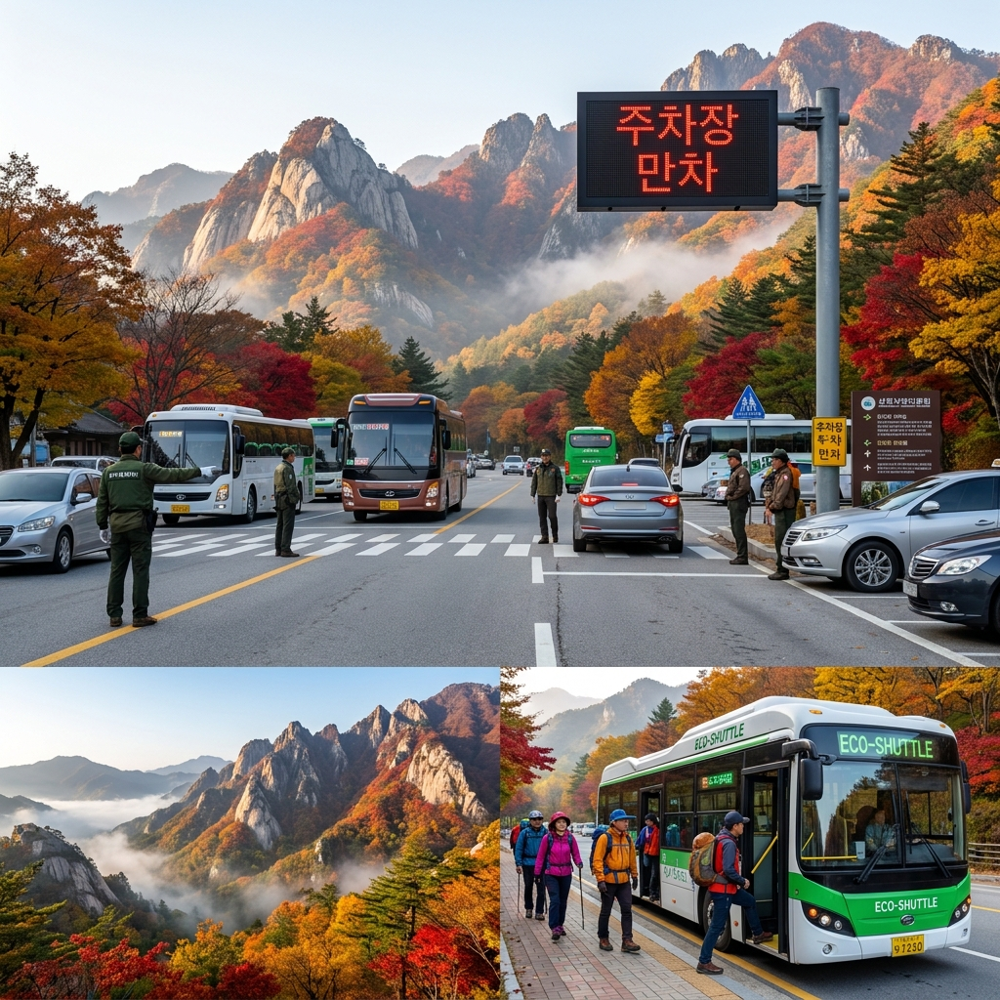
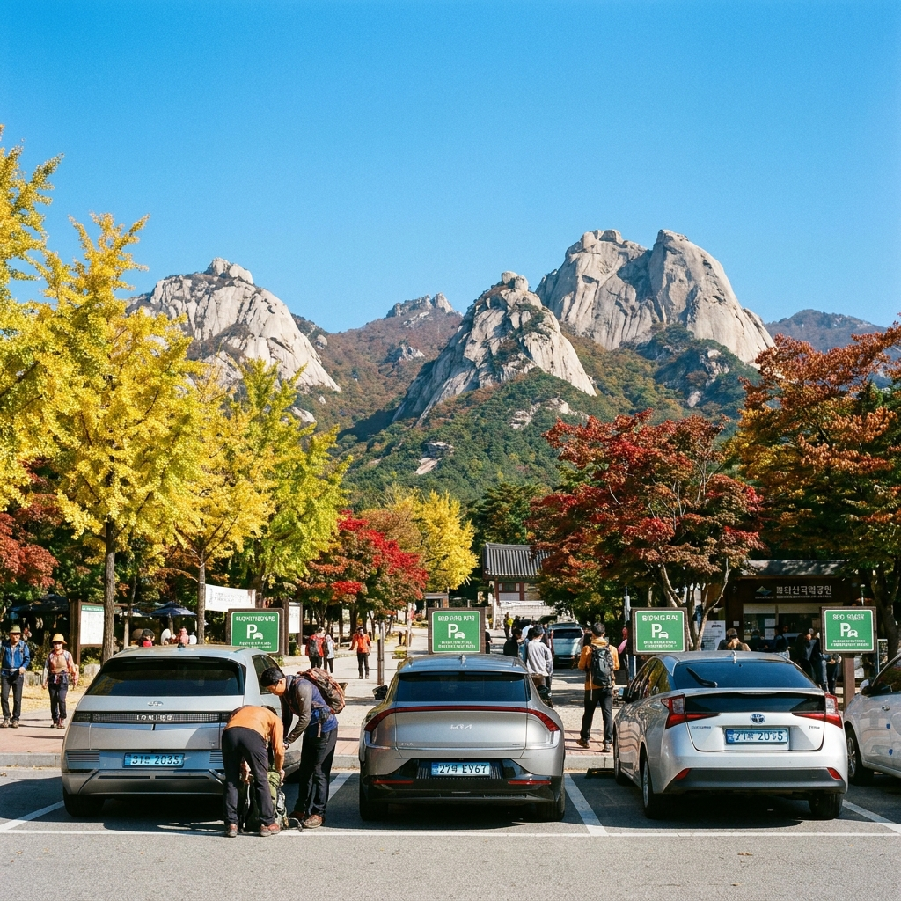

2026 단풍철 설악산·북한산 국립공원 주차장 만차 시각표와 무료 셔틀버스 환승 정류장 위치 비교
단풍이 붉게 타오르는 10월, 전국의 국립공원은 가을 산행객과 나들이 차량으로 극심한 교통 정체를 겪습니다. 특히 설악산과 북한산, 내장산은 주말 아침 일찍 서두르지 않으면 주차장 진입로에서만 2~3시간 이상 도로에 갇히거나 주차장 만차로 차를 돌려야 하는 낭패를 겪기 일쑤입니다.
산림청과 국립공원공단에 따르면 2026년 설악산 단풍 절정기는 10월 20일경으로 예측되며, 10월 둘째 주부터 11월 첫째 주까지 주말마다 특별 교통대책이 가동됩니다. 오늘 포스팅에서는 주요 국립공원 주차장의 주말 시간대별 만차 시각 예측표, 소공원 차량 통제 시 대체 주차장 위치, 무료 셔틀버스 환승 정류장 및 새벽 출발 골든타임 체크리스트를 완벽하게 비교해 드립니다.

단풍 성수기 이른 아침 국립공원 주차장 만차 안내와 무료 순환 셔틀버스 환승 정류장 풍경 / AI 제작 이미지
01 | 2026 국립공원 단풍 절정 예상일과 주말 교통량 집중 구간
국립공원공단과 산림청이 공동 발표한 2026년 주요 국립공원별 단풍 절정 예상 시기는 설악산 10월 20일경, 오대산 10월 17일경, 북한산 10월 28일경, 내장산 11월 4일경으로 집계되었습니다.
가장 많은 인파가 몰리는 10월 중순부터 하순까지 주말(토·일요일)에는 각 국립공원 진입 도로가 오전 6시 이전부터 극심한 병목 현상을 겪습니다. 특히 설악산 진입로(미시령 톨게이트~설악동 삼거리), 북한산성 입구(은평 뉴타운~북한산로), 내장산 집단시설지구 진입로는 전국에서도 가장 정체가 심한 3대 병목 구간입니다.
이 구간들은 왕복 2차선 협소 도로가 많아 한 번 정체가 시작되면 우회 도로가 전무하므로, 출발 시간을 30분 앞당기는 것이 산행의 성패를 가릅니다.
02 | 주요 국립공원 주차장 주말 시간대별 만차 시각 예측표
국립공원 주요 주차장의 주말(토요일·공휴일) 시간대별 혼잡도 및 만차 예상 시각을 과거 빅데이터와 공단 안내를 토대로 분석한 비교표입니다.
| 국립공원명 |
핵심 주차장 |
주말 만차 예상 시각 |
대체 임시 주차장 |
혼잡 회피 골든타임 |
| 설악산 (소공원) |
설악동 소공원 주차장 (350대) |
오전 06:20 ~ 06:40 만차 |
설악동 B·C지구 주차장 (무료 셔틀) |
새벽 05:40 이전 도착 |
| 설악산 (오색) |
오색지구 공영주차장 |
오전 06:00 ~ 06:30 만차 |
관터 임시주차장, 오색터미널 인근 |
새벽 05:30 이전 도착 |
| 북한산 (북한산성) |
북한산성 제1·제2 주차장 |
오전 07:30 ~ 08:00 만차 |
은평한옥마을 공영, 구파발역 환승 |
오전 07:00 이전 도착 |
| 내장산 |
내장산 제1·제2 주차장 |
오전 08:00 ~ 08:30 만차 |
제3·제4 임시주차장 (무료 셔틀) |
오전 07:15 이전 도착 |
| 지리산 (성삼재) |
성삼재 휴게소 주차장 |
새벽 04:30 ~ 05:00 만차 |
천은사 입구 주차장, 구례읍 버스 |
새벽 04:00 이전 도착 |
💡 시간대 분석: 설악산 소공원 주차장은 부지가 협소하여 새벽 6시 30분을 넘기면 100% 만차가 됩니다. 이후 도착하는 차량은 경찰과 공단 요원에 의해 하류 B·C지구 주차장으로 강제 회차 조치됩니다.
03 | 설악산 소공원 주차장 교통통제와 B·C지구 주차장 이용 전략
설악산 소공원 주차장은 비선대와 울산바위, 케이블카 탑승장 바로 앞에 위치해 가장 편리하지만, 주차 면수가 350여 대에 불과합니다. 단풍철 주말에는 소공원 주차장이 채워지는 즉시 설악동 삼거리부터 소공원 방향 진입로가 전면 통제됩니다.
만약 도로 전광판에 '소공원 만차' 표기가 뜨거나 교통경찰이 수신호를 보낸다면 지체 없이 설악동 B지구(약 800대) 또는 C지구(약 1,200대) 대형 공영주차장으로 진입해야 합니다.
B·C지구 주차장은 진입로 초입에 위치해 도로 정체에 갇히지 않고 신속하게 주차가 가능하며, 전기차 급속 충전기와 깨끗한 공중화장실, 편의시설이 잘 갖추어져 있습니다.
04 | 설악산 B·C지구~소공원 무료 셔틀버스 운행 시간과 배차 간격
B·C지구 주차장에 차를 댄 탐방객을 위해 속초시와 국립공원사무소는 단풍 성수기 특별 순환 셔틀버스를 대규모로 투입합니다.
🚌 2026 설악산 단풍철 무료 셔틀버스 운행 안내
- 운행 기간: 2026년 10월 3일(토) ~ 11월 8일(일) 매주 토·일요일 및 공휴일
- 운행 구간: 설악동 C지구 주차장 → B지구 주차장 → 소공원 매표소 (왕복 4.5km)
- 운행 시간: 오전 07:00 ~ 오후 18:30 (상황에 따라 탄력적 연장 운행)
- 배차 간격: 5분 ~ 10분 수시 운행 (출퇴근 혼잡 시 차량 만차 즉시 출발)
- 이용 요금: 완전 무료 (별도 승차권 없이 정류장 줄서기 순서대로 탑승)
셔틀버스는 버스전용차로와 비상차로를 활용하므로, 정체된 일반 승용차 행렬을 지나쳐 약 8~10분 만에 소공원 매표소 바로 앞 정류장에 도착합니다.

북한산성 입구 주차장과 백운대 암봉을 배경으로 질서 있게 주차된 탐방객 차량들 / AI 제작 이미지
05 | 북한산성 제1·제2 주차장 만차 시각과 임시 주차장 대체지
수도권 주민들이 가장 많이 찾는 북한산성 탐방지원센터 입구는 주말 오전 7시 30분부터 북한산성 제1주차장과 제2주차장이 가득 찹니다.
만차가 되면 진입로에서 하염없이 출차 차량을 기다려야 하므로, 늦게 도착했을 때는 다음의 대체 주차장을 활용하는 것이 현명합니다.
1. 은평한옥마을 공영주차장: 도보 약 15분 거리, 한옥마을과 진관사를 둘러보며 북한산 둘레길을 통해 우회 진입 가능.
2. 구파발역 환승공영주차장: 지하철 3호선 구파발역에 주차(10분당 200원) 후 704번, 34번 시내버스를 타면 10분 만에 북한산성 입구 도착.
3. 효자비·사기막 임시 주차장: 숨은벽 코스를 이용할 계획이라면 사기막골 야영장 인근 임시 주차공간 활용 추천.
06 | 내장산 단풍철 차량 통제 구간과 무료 셔틀버스 탑승 위치
호남 최고의 단풍 명소인 내장산은 10월 하순부터 11월 초순까지 극단적인 차량 정체를 겪습니다. 단풍 절정기에는 내장사 집단시설지구 매표소부터 내장사 일주문까지 2.5km 도로에 일반 차량 통행이 전면 금지됩니다.
탐방객은 하류의 제1·제2주차장이나 임시로 개설되는 제3·제4주차장에 차를 대야 합니다. 주차장에서 매표소까지는 시내 순환버스가 운행되며, 매표소 통과 후 탐방안내소에서 금선교·일주문까지는 '내장산 국립공원 친환경 전기 셔틀버스'(편도 성인 1,000원)가 쉼 없이 운행되어 노약자도 편안하게 단풍 터널을 지날 수 있습니다.
07 | 국립공원 공영주차장 주차 요금 및 감면 대상 비교표
국립공원공단 직영 주차장의 법정 주차 요금은 성수기와 비성수기로 구분되어 징수됩니다. 단풍철은 당연히 '성수기' 요율이 적용됩니다.
| 차량 구분 |
기본 요금 (최초 1시간) |
1시간 초과 시 (10분당) |
감면 대상 및 할인율 |
| 소형 / 중형 (승용차) |
2,000원 |
300원 (성수기) |
경차·저공해 50% 감면 |
| 대형 (버스·승합차) |
3,000원 |
500원 (성수기) |
국가유공자·장애인 100% 면제 |
| 전기차·수소차 |
소형 요율 적용 |
소형 요율 적용 |
1시간 무료 + 초과 시 50% 감면 |
사전 무인정산기를 이용하면 출차 시 대기 시간을 크게 줄일 수 있으며, 친환경 차량이나 다자녀 감면 대상자는 호출 버튼을 눌러 증빙 후 할인 결제를 진행하시면 됩니다.
08 | 대중교통 시외버스+시내버스 연계로 차 없이 단풍 즐기는 법
주차 스트레스를 0%로 만드는 가장 완벽한 방법은 '대중교통 뚜벅이 산행'입니다. 국립공원 대부분은 시외버스터미널 및 KTX 기차역에서 국립공원 입구까지 직통 시내버스 노선이 매우 촘촘하게 연결되어 있습니다.
- 설악산: 속초고속/시외버스터미널 앞 정류장에서 7번, 7-1번 시내버스 탑승 (종점 소공원 매표소 하차, 배차간격 10분).
- 북한산: 지하철 3호선 구파발역 1번 or 2번 출구에서 704번, 34번 버스 탑승 (북한산성입구 하차, 약 12분 소요).
- 내장산: KTX 정읍역 앞 버스승강장에서 171번 시내버스 탑승 (내장산 집단시설지구 종점 하차, 20분 간격 운행).
대중교통을 이용하면 하산 지점을 출발지와 다르게 설정할 수 있어(예: 설악산 소공원 출발 → 오색 하산, 북한산성 출발 → 우이동 하산) 훨씬 다채롭고 긴 종주 트레킹을 즐길 수 있는 큰 장점이 있습니다.
09 | 단풍철 국립공원 새벽 출발 골든타임 및 주차 스트레스 회피 체크리스트
가을 단풍 산행을 망치지 않고 여유롭게 자연을 만끽하기 위한 실전 행동 지침 체크리스트입니다.
🚨 단풍철 주차 성공을 위한 5대 행동 강령
1. 새벽 05:30 이전 현장 도착 원칙: 설악산·북한산의 주말 주차 마지노선은 6시 30분입니다. 최소 5시 30분에는 입구에 도착해야 소공원/제1주차장 확보 가능.
2. '만차' 표지판 발견 시 즉시 대체 주차장 직행: 도로에서 헛되이 대기하지 마시고 즉시 B·C지구 등 임시 주차장으로 이동하여 무료 셔틀버스를 타세요.
3. 국립공원공단 실시간 주차 정보 앱 확인: '국립공원 스마트 탐방' 앱이나 공단 홈페이지에서 실시간 주차 가능 면수를 수시 체크.
4. 사전 정산기 결제 필수: 하산 후 출차 전 무인정산기를 통해 주차비를 미리 결제하여 출차 병목 시간을 단축하세요.
5. KTX 및 대중교통 이용 적극 고려: 주말 당일치기는 자가용보다 시외/고속버스 및 열차 환승이 실제 소요시간 면에서 2시간 이상 빠릅니다.
철저한 시간 안배와 영리한 주차장 선택으로, 2026년 가을 단풍의 절정을 막힘없이 쾌적하게 즐겨보시기 바랍니다.
#국립공원단풍
#설악산주차장
#북한산주차장
#국립공원셔틀버스
#단풍철주차
#설악산무료셔틀
#가을단풍절정
#내장산주차장
#주차요금감면
#가을산행준비